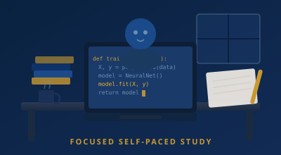

Python Language
From zero to production: syntax, OOP, APIs, testing and tooling. The foundation for everything we teach.
Learn more →London’s coding bootcamp for Python, Data Science, AI and Agentic AI. Get job-ready in weeks.
Intensive, hands-on programmes designed for career changers and developers who want to specialise in data and AI.
From zero to production: syntax, OOP, APIs, testing and tooling. The foundation for everything we teach.
Learn more →Statistics, visualisation, ML pipelines and real datasets. Turn data into decisions.
Learn more →Modern AI: LLMs, embeddings, RAG and fine-tuning. Build and deploy intelligent applications.
Learn more →Agents, tools, orchestration and autonomous systems. The next frontier of AI engineering.
Learn more →Join a community of learners. Study from anywhere with live sessions and collaborative projects.

Our vision: cutting-edge environments where data and AI education meets tomorrow’s tech.
Industry-aligned curriculum, live instruction and career support, all in the heart of London.
Real feedback from professionals who have studied with us.
★★★★★"I came in with zero Python experience. By the end of the bootcamp I had built a complete data pipeline and landed a junior data analyst role within six weeks of finishing. The live sessions made all the difference, it felt nothing like watching pre-recorded videos."
★★★★★"The AI bootcamp was exactly what I needed. The curriculum is genuinely up to date, we were working with the latest models, RAG pipelines, and real deployment patterns. Ali's industry experience comes through in every session. I've already started building AI features at work."
★★★★★"I was sceptical about online learning after bad experiences elsewhere. This was completely different. The support team responds fast, the IQA process is rigorous, and the NCFE qualification is something I can actually put on my CV and have employers recognise. Highly recommended."
⚠️ Testimonials are illustrative. Replace with verified reviews from your learners before publishing.
Quick answers about our bootcamps and how we work.
We offer four intensive online bootcamps: Python Language, Data Science, AI, and Agentic AI. You can take a single course or stack all four to build a complete data and AI skill set.
Yes. Our qualifications are delivered through NCFE, an Ofqual-regulated awarding organisation. This means they sit on the Regulated Qualifications Framework (RQF) and carry nationally recognised certification that employers across the UK trust.
Yes, all of our bootcamps are delivered 100% online through our Virtual Learning Environment. You can study from anywhere in the UK with live sessions, recorded content available within 48 hours, and direct tutor support.
Each bootcamp is designed to get you job-ready in weeks, not years. The Python and Data Science courses run for approximately 8 to 10 weeks. The AI and Agentic AI bootcamps are around 8 weeks each. You can study part-time alongside work.
The Python Language bootcamp requires no prior coding experience, it starts from absolute zero. The Data Science and AI courses assume solid Python knowledge. Agentic AI is designed for those who have completed the AI course or have equivalent experience with LLMs.
Fill in our short online application form, it takes under five minutes. We'll email you within two working days to confirm and arrange a brief introductory call to discuss your goals and cohort dates.
Call us on +44 207 0990 956 (Monday-Friday, 9am-6pm), email info@dataaischool.com, or use our contact form. We aim to reply within two working days.